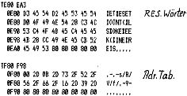

80-Bus Journal |
April 1983 · Ausgabe 4 |
Die vorangegangenen Artikel zeigen, daß es sehr nützlich sein kann, auch als BASIC-Programmierer eine Ahnung vom Maschinencode zu haben. Und die bisherigen Beiträge von Gerhard Klement geben ja einen plastischen Eindruck davon, was man aus einer gekonnten Mischung von BASIC-Programmen, Maschinencode und direktem Eingriff ins BASIC auf Maschinenebene alles machen kann. (Demnächst werden wir Ihnen ein „Visicalc“ vorstellen, in dem diese Technik perfekt verwirklicht wurde).
Diese Möglichkeiten wurden auch von den Schöpfern des Crystal-BASIC erkannt, und sie haben beste Voraussetzungen geschaffen, es zu verwirklichen.
Seit Jahren warten wir Anwender des 8K-Microsoft-BASIC darauf, endlich eine ausreichende Dokumentation zu erhalten, die uns etwas Einblick in den inneren Aufbau des BASIC erlaubt. Demnächst soll es ja soweit sein, wenn das neue in England erschienene Buch auch auf dem deutschen Markt erhältlich ist. Das Crystal-BASIC liefert diese Dokumentation frei Haus. Deshalb erübrigt sich auch eine genauere Beschreibung. Es seien nur die Einzelheiten genannt, die zum Verständnis der nachfolgenden Programme nötig sind.
Der Vorteil des X-Tal BASIC (schreibt sich so bequemer) liegt wie gesagt in seiner „Maschinenfreundlichkeit“. So ist es (wie auch im Pascal) möglich, durch ein einfaches CALL XYZ Maschinenprogramme aufzurufen. Dabei entfallen die umständlichen „Dokereien“ und die Verrenkungen, die zum Aufruf verschiedener Programme auf Maschinenebene gemacht werden müßten. (Die Hauptanwendungsfälle -nämlich die Tastatur-Routinen- werden sowieso nicht mehr benötigt, da das X-Tal BASIC schon die Befehle KBD und INCH zur Tastaturabfrage enthält).
Der weit elegantere Vorteil ist die Möglichkeit, selbst neue BASIC-Statements zu schaffen. Damit können Sie sich ein BASIC genau nach Ihren Wünschen zusammenbauen, ohne ein Toolkit auf umständliche Weise getrennt laden zu müssen.
Dies soll nun gleich praktisch demonstriert werden. Leider fehlen dem X-Tal BASIC die Befehle DEEK,DOKE,CLS,SET,RESET,POINT und ein paar unwichtige Commands, die z.T. durch ähnliche ersetzt sind.
Wie die ersten drei einfach selbst implementiert werden können, zeigt das Handbuch. (durch die 5 Hexdump-Zeilen ab 2F52 in nachfolgendem Listing).
Was die Blockgrafikroutinen angeht, so sollten wir denen nicht nachtrauern: Michael Bach hat im letzten Heft viel bessere angeboten, die man auf einfache Weise ins BASIC einbauen kann.
Laden Sie das X-Tal BASIC, tippen Sie das Programm ab 2D00 ein, ändern Sie den Beginn des Textpuffers durch M1283 00 30 (normalerweise beginnen die Programme bei 2D00). Nun müssen die neuen Reservierten Wörter und die entsprechenden Adressen in die Tabellen eingetragen werden (siehe Listing E80 und F80). Speichern Sie „Ihr“ BASIC nun ab E00 bis 3000 auf Cassette und starten Sie das BASIC mit 1000 (bei 1004 würden die neuen Befeie verlorengehen.
Nun haben Sie CLS,DEEK(,SET und RESET wieder zur Verfügung. Zusätzlich aber noch zwei Grafikroutinen, für die ein BASIC-Programm eine Menge Zeit brauchte: LINE und KREIS.

Die Funktionen können im Assemblerlisting des letzten Heftes nachgeschlagen werden; hier nur die praktische Anwendung.
LINEX0,Y0,X,Y zeichnet eine Linie von den ersten nach den zweiten Koordinaten.
KREISX.Y.R zeichnet einen Kreis vom Mittelpunkt X,Y mit dem Radius R.
Im abgedruckten Assemblerlisting werden bei beiden Routinen die Punkte nicht gesetzt sondern invertiert, d.h. beim nochmaligen Aufruf von z.B. „KREIS“ mit den selben Koordinaten wird dieser Kreis wieder gelöscht. Dies hat sich als recht praktisch erwiesen. Möchte man aber das Setzen oder Löschen direkt bewirken, so sind im Listing folgende Bytes zu ändern:
2D1E 01 und 2D42 00 für „setzen“ 2D1E 00 und 2D42 00 für „löschen“
Nun fehlt uns immer noch das POINT. Hier habe ich Michael Bach gebeten, uns das noch nachzuliefern. Vielleicht klappt es noch für dieses Heft.
Für diejenigen, die das X-Tal BASIC schon besitzen, sind diese Routinen sicher sehr brauchbar. Ich werde versuchen, im Laufe der Zeit noch einige hinzuzufügen. (So ist gerade eine Dez/Hex und Hex/Dez Umwandlung in Arbeit). Bestimmt werden mich einige Leser dabei unterstützen. Für die Microsoft-Benutzer, die auch weiterhin kein anderes BASIC anwenden wollen, könnten die Routinen dann interessant werden, wenn wir mehr über „unser altes BASIC“ wissen. Warten wir auf das Erscheinen des Buches.
Soweit klingt das ja wohl, als würde ich für die Werbung bezahlt; als alter Maschinen-Freak bin ich aber wirklich von den genannten Möglichkeiten begeistert (vor allem von der ausgezeichneten Hilfe, die einem beim Erstellen von Maschinenprogrammen geliefert wird. Es werden sogar eine Menge Beispielprogramme im Assembler vorgestellt, die man übernehmen oder variieren kann).
Eine kleine Kritik sei aber dennoch nachgestellt: Die fehlende Möglichkeit, die UP- und DOWN Cursortasten beim Editieren zu verwenden und die ungewohnte Reaktion beim Benutzen der anderen Control-Tasten (z.B. CS anstatt ESC) stören mich sehr. Dazu kommt, daß man das Auflisten auf dem Bildschirm kaum stoppen kann. Dies wird zum reinen Reaktionstraining. Der Ausdruck einer vorgegebenen Zeilenzahl mit LINES war bei Microsoft auch angenehm. Aber sicher komme ich diesen „Fehlern“ mit der Zeit auch per Maschinencode auf die Schliche.
| Seite 5 von 28 |
|---|